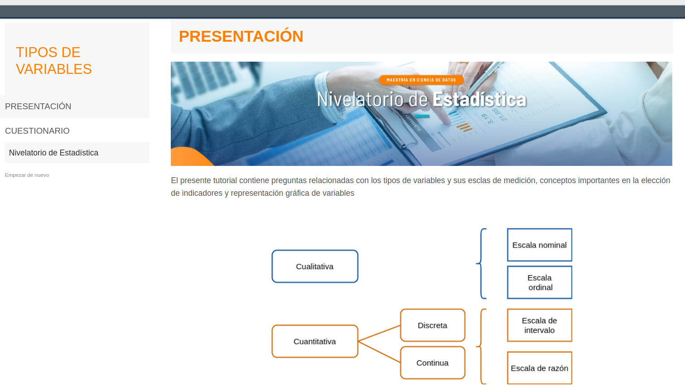

Los tutoriales constituyen una buena herramienta para el parendizaje de R, permitiendo realizar pruebas de opción multiple y tambien el aprendizaje la programación en R utilizando problemas que retan al usuario, brindando tambien apoyo mediante ayudas de código.
En este caso - Nivelatorio de Estadística - para asceder a los tutoriales realizar la instalación previa de paqueteNIV que además de los tutotiales, contiene data y funciones.
# se deben instalar los paquetes en caso de no haberlo hecho antes
install.packages("learnr") # solo una vez
install.packages('remotes') # solo una vez
# codigo para cargar instructivo Taller_regresion1
library(remotes)
library(devtools)
install_github("dgonxalex80/paqueteNIV", force = TRUE) # instala paqueteNIV
learnr::run_tutorial("tutorial101", "paqueteNIV") # correr instructivo 1
# se deben instalar los paquetes en caso de no haberlo hecho antes
install.packages("learnr") # solo una vez
install.packages('remotes') # solo una vez
# codigo para cargar instructivo Taller_regresion1
library(remotes)
library(devtools)
install_github("dgonxalex80/paqueteNIV", force = TRUE) # instala paqueteNIV
learnr::run_tutorial("tutorial101", "paqueteNIV") # aqctiva tutorial101En caso de presentar error al reinstalar paqueteNIV adicione el
parametro : force = TRUE
devtools::install_github("dgonxalex80/paqueteNIV", force = TRUE)
Después de la ejecución del código debe aparecer una página como la que se muestra en la siguiente figura
